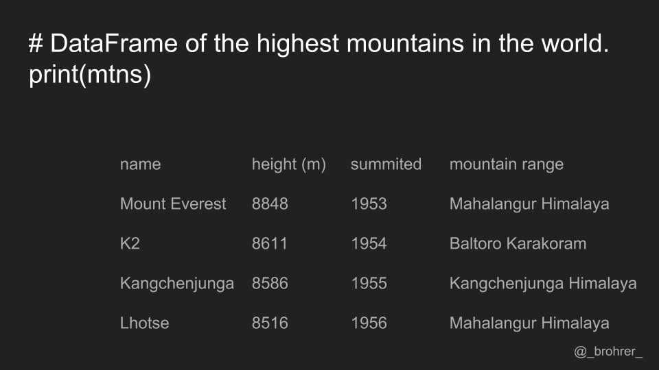

There are a lot of ways to pull the elements, rows, and columns from a DataFrame. (If you're feeling brave some time, check out the 7(!)-part series on pandas indexing linked to below.) Some indexing methods appear very similar but behave very differently. The goal of this post is identify a single strategy for pulling data from a DataFrame that is straightforward to interpret and produces reliable results. Just a warning--these are my own thoughts only and they come with no guarantees of being authoritative or even accurate.
In case you wanted to skip to the end, here is the bottom line.
- use .loc[] for labels
- use .iloc[] for positions
- explicitly designate both rows and columns, even if it's with ':'
We'll step through some examples to illustrate these. Below is a link to the python script if you would like to run them yourself.
To start with, we create a small data frame using data from Wikipedia on the highest mountains in the world. For each mountain, we have its name, height in meters, year when it was first summitted, and the range to which it belongs. If this is your first exposure to a pandas DataFrame, each mountain and its associated information is a row, and each piece of information, for instance name or height, is a column.
Each column has a name associated with it, also known as a label. The labels for our columns are 'name', 'height (m)', 'summitted', and 'mountain range'. In pandas data frames, each row also has a name. By default, this label is just the row number. However, you can set one of your columns to be the index of your DataFrame, which means that its values will be used as row labels. We set the column 'name' as our index.
It is a common operation to pick out one of the DataFrame's columns to work on. To select a column by its label, we use the .loc[] function. One thing that we can do that makes our commands easy to interpret is to always include both the row index and the column index that we are interested in. In this case, we are interested in all of the rows. To show this, we use a colon. Then, to indicate the column that we're interested in we add its label. The command mountains.loc[:, 'summitted'] gets us just the 'summitted' column.
It’s worth noting that it this command returns a Series, the data structure that pandas uses to represent a column. If instead of a Series, we just wanted an array of the numbers that are in the 'summitted' column, then we add '.values' to the end of our command. This returns a numpy array containing [1953, 1954, 1955, and 1956].
If we would only like to get a single row, then we use the .loc[] function again, this time specifying a row label, and putting a colon in the column position.
If we only want a single value, for instance the year that K2 was summitted, then we can specify the labels for both the row and the column. The row always comes first.
While it is true that you can get away with using only one argument in the .loc[] function, it is most straightforward to interpret if you always specify both row and column, even if it is with a colon.
We don’t have to limit ourselves to a single row or single column using this method. Here, in the row position we pass a list of labels. This returns a set of rows, rather than just one.
We can also get a subset of the columns, by specifying the start and end column, and putting a ':' in between. In this case, 'height': 'summitted' will give us all of the columns between and including the startpoint, 'height', and the endpoint, 'summitted'. Note that this is different than numerical indexing in numpy, where the endpoint is omitted. Also, because we have already specified the name column as the index, it will also be returned in the data frame that we get back
In addition, we can select rows or columns where the value meets a certain condition. In this case, we want to find the rows where the values of the 'summitted' column are greater than 1954. In the rows position, we can put any Boolean expression that has the same number of values as we have rows. We could do the same for columns if we wished.
As an alternative to selecting rows and columns by their labels, we can also select them by their row and column number. The ordering of the columns, and thus their positions, depends on how the data frame is initialized. The index column, our 'name' column, doesn’t get counted.
To select data by its position, we use the .iloc[] function. Again, the first argument is for the rows, and the second argument is for the columns. To select all the columns in the zeroth row, we write .iloc[0, ;]
Similarly, we can select a column by position, by putting the column number we want in the column position of the .iloc[] function.
We can pull out a single value, by specifying both the position of the row and the column.
We can pass a list of positions if we want to cherry pick certain rows and/or certain columns.
We can also use the colon range operator to get a contiguous set of rows or columns by position. Note that unlike the .loc[] function using labels, the .iloc[] function using positions does not include the endpoint. In this case, it returns only columns zero and one, and does not return column two.
All of this can be summed up as follows. Use .loc[] for label-based indexing Use .iloc[] for position-based indexing, and Explicitly designate both the rows and the columns even if it’s with a colon.
This set of guidelines will give you a consistent and straightforwardly interpretable way to pull the data that you need from a pandas DataFrame.
Good luck with your data munging!